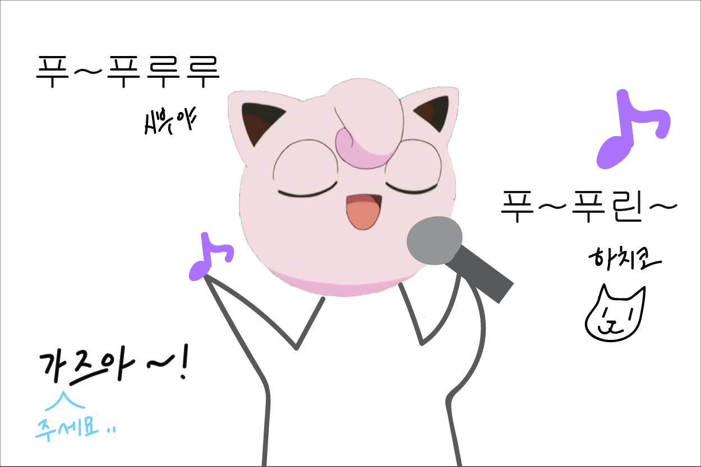
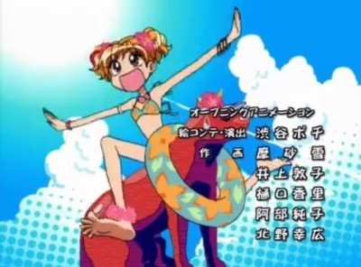
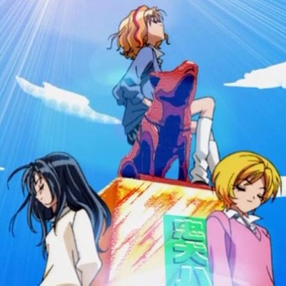

워크숍이 끝난 뒤 친구들과 나는 자유를 얻어 도쿄로 놀러갈 계획을 세웠다. 우리에게 주어진 시간은 딱 하루. 우리는 그 누구보다 알차고 실속있게 즐겨야했다. 어렸을 적 애니메이션 중독자였던 서희는 애니 <슈퍼갤즈>의 배경인 시부야를 가기위해 친구에게 노래를 불렀다.
↓↓↓슈퍼갤즈
시부야구를 주 무대로 노는 갸루 패션(gal)의 여고생 3명을 주인공으로하는 일상물이다.
 하치코를 만나러 가는 길은 순탄치 않았다. 치바시에서 지하철을 몇 번 갈아타야 했고 시부야에 가까워질수록 사람이 너무 많아 친구들과 떨어져 길을 잃지 않으려고 조심해야했다. 그리고..
꼬옥♥
친구들덕분에 무사히 마친 여행. 일기 끗